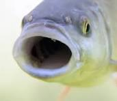
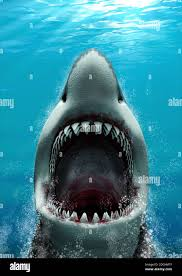

Los japoneses siempre han gustado el pescado fresco. Pero las aguas cercanas a Japón no han tenido muchos peces por décadas. Así que para alimentar a la población japonesa, los barcos pesqueros fueron fabricados más grandes para ir mar adentro
Mientras más lejos iban los pescadores, más era el tiempo que les tomaba regresar a entregar el pescado. Si el viaje tomaba varios dias, el pescado ya no estaba fresco.
Para resolver el problema, las compañias instalaron congeladores en los barcos pesqueros. Así podrían pescar y poner los pescados en los congeladores. Sin embargo, los japoneses pudieron percibir la diferencia entre el pescado congelado y el fresco y no les gustaba el congelado; por lo tanto, tenían que venderlo más barato.
Las compañias entonces instalaron tanques para los peces en los barcos. Podían así pescar los peces, meterlos en los tanques t mantenerlos vivos hasta llegar a la costa. Pero después de un tiempo los peces dejaban de moverse en el tanque. Estaban aburridos y cansados, aunque vivos. Los consumidores japoneses también notaron la diferencia del sabor porque cuando los peces dejaban de moverse por días, pierden el sabor fresco.

Para mantener el sabor fresco de los peces, las compañías pesqueras ponen a los peces dentro de los tanques en los botes, pero ahora ponen también un ¡tiburón pequeño!
Claro que el tiburón se come algunos peces, pero los demás llegan muy, pero muy vivos. ¡Los peces son seafinados! Tienen que durar durante todo el trayecto dentro del tanque, para mantenerse vivos.
Cuando alcances tus metas proponte otras mayores. Nunca debes crear el éxito para luego acostarte en él.
Así que invita a un "Tiburón a tu Tanque" y descubre qué tan lejos realmente puede llegar
Unos cuantos "tiburones" te harán conocer tu potencial, que no te asusten sus "dientes ni sus trampas", tú sigue alerta, pero siempre "fresco".
Siempre habrá tiburones a donde vayas.
